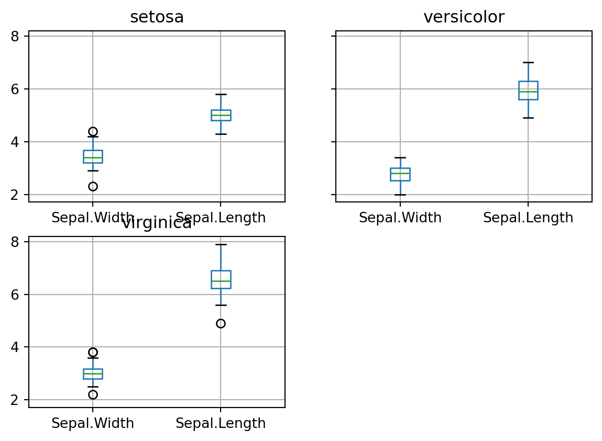
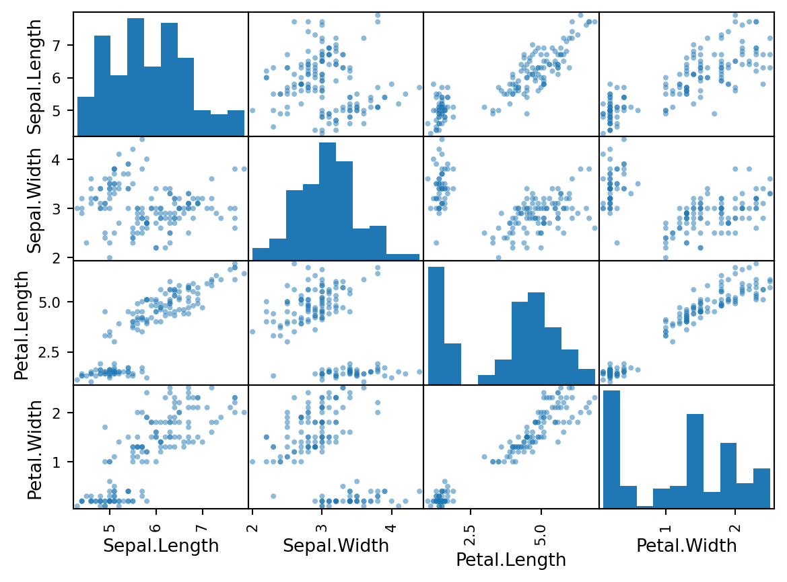

# 引入 numpy 模組
import numpy as np
# 一維陣列
np1 = np.array([1, 2, 3])
np2 = np.array([3, 4, 5])
# 陣列相加
print(np1 + np2) # [4 6 8]
# 二維陣列
np3 = np.array([[1.1, 1.2, 1.3], [2.1, 2.2, 2.3]])
print(np3)
print(np3[0,2]) #顯示陣列中(0,2)位置的值
# 顯示陣列相關資訊
print(np1.ndim, np1.shape, np1.dtype) # 1 (3,) int64 => 一維陣列, 三個元素, 資料型別
#建立陣列
#建立填滿 0 或 1 的陣列
np4 = np.zeros([2, 3]) # array([[ 0., 0., 0.], [ 0., 0., 0.]])
print(np4)
np5 = np.ones([2, 3]) # array([[ 1., 1., 1.], [ 1., 1., 1.]])
print(np5)
## Arange
r1 = np.arange(25, 30, .5) #從25到30(不包含30)，每0.5為間隔
print(r1)
## Linspace
r2 = np.linspace(3, 5, 9) #從3到5(包含5)，等距離切9個點
print(r2)Basic Python Review
課程 Python 語言環境設定
安裝程式
- 下載並安裝 Python https://www.python.org/downloads/
- 下載並安裝 VSCode https://code.visualstudio.com/download
- 下載並安裝 Quarto https://quarto.org/docs/get-started/
Numpy
# if else
a = 2
if (a>0):
print('yes')
else:
print('no')
#for loop
for i in range(100):
if( i%10==0 ):
print(i)
# while loop
count = 0
while count < 3:
print(count)
count = count+1yes
0
10
20
30
40
50
60
70
80
90
0
1
2Pandas
Pandas ：資料前處理 (建資料集、插補)、敘述統計
import os
import pandas as pd
tmp = pd.read_csv('../sample_data/iris.csv')
print(len(tmp))150Pandas 也提供基礎統計圖表功能
# 引入 pandas 模組
import pandas as pd
path = r'../sample_data/iris.csv'
df = pd.read_csv(path, sep=',', na_values=".")
# 資料結構
df.shape # dim (150,5)
df.dtypes # 各變數的結構(數值、文字..)
df.columns # 欄位名稱Index(['Sepal.Length', 'Sepal.Width', 'Petal.Length', 'Petal.Width',
'Species'],
dtype='object')# 變數欄位取得
print(df.loc[:, ['Sepal.Length','Species']]) # 使用變數名稱取得column
print(df.iloc[:, [0, 4]]) # 使用Index取得column
# 資料欄位取得
print(df.loc[0:2,]) # 取得Row 0~2的資料
print(df.loc[0:2, ['Sepal.Length','Species']]) # 取得Row 0~2特定變數名稱的資料
print(df.iloc[0:2, [0, 4]]) # 使用Index取得column
#| eval: true
# 連續變數的統計量
iris_conti_vars = ['Sepal.Length', 'Sepal.Width', 'Petal.Length', 'Petal.Width']
print(df[iris_conti_vars].sum()) # 各變數總和
print(df[iris_conti_vars].mean()) # 各變數平均
print(df[iris_conti_vars].median()) # 各變數中位數
print(df[iris_conti_vars].describe()) # 統計量(n,mean,std,min,Q1,median,Q3,max)
# 離散變數的統計量
print((df.Species.unique())) # 顯示離散變數的 levels
print(pd.value_counts(df.Species)) # 計算各品種的個數Pandas 同時也提供一些基礎統計圖表功能，例如
- 將資料分組，並看其萼片寬度
group_Species=df.groupby('Species')
print(group_Species['Sepal.Width'].mean()) # 示範分組計算 'Sepal.Width' 的平均數
# 分組畫 Boxplots
group_Species.boxplot(column=['Sepal.Width', 'Sepal.Length'], return_type = None)Species
setosa 3.428
versicolor 2.770
virginica 2.974
Name: Sepal.Width, dtype: float64setosa Axes(0.1,0.559091;0.363636x0.340909)
versicolor Axes(0.536364,0.559091;0.363636x0.340909)
virginica Axes(0.1,0.15;0.363636x0.340909)
dtype: object
- 以散布圖觀察 Iris 資料
from pandas.plotting import scatter_matrix
scatter_matrix(df[['Sepal.Length','Sepal.Width','Petal.Length','Petal.Width']])array([[<Axes: xlabel='Sepal.Length', ylabel='Sepal.Length'>,
<Axes: xlabel='Sepal.Width', ylabel='Sepal.Length'>,
<Axes: xlabel='Petal.Length', ylabel='Sepal.Length'>,
<Axes: xlabel='Petal.Width', ylabel='Sepal.Length'>],
[<Axes: xlabel='Sepal.Length', ylabel='Sepal.Width'>,
<Axes: xlabel='Sepal.Width', ylabel='Sepal.Width'>,
<Axes: xlabel='Petal.Length', ylabel='Sepal.Width'>,
<Axes: xlabel='Petal.Width', ylabel='Sepal.Width'>],
[<Axes: xlabel='Sepal.Length', ylabel='Petal.Length'>,
<Axes: xlabel='Sepal.Width', ylabel='Petal.Length'>,
<Axes: xlabel='Petal.Length', ylabel='Petal.Length'>,
<Axes: xlabel='Petal.Width', ylabel='Petal.Length'>],
[<Axes: xlabel='Sepal.Length', ylabel='Petal.Width'>,
<Axes: xlabel='Sepal.Width', ylabel='Petal.Width'>,
<Axes: xlabel='Petal.Length', ylabel='Petal.Width'>,
<Axes: xlabel='Petal.Width', ylabel='Petal.Width'>]], dtype=object)
Today’s Practice
import numpy as np
np.random.seed(1)
a = np.random.permutation(np.arange(1,9))
print(a)
np.random.normal[8 3 2 7 1 5 4 6]<bound method RandomState.normal of RandomState(MT19937) at 0x2343F736640>